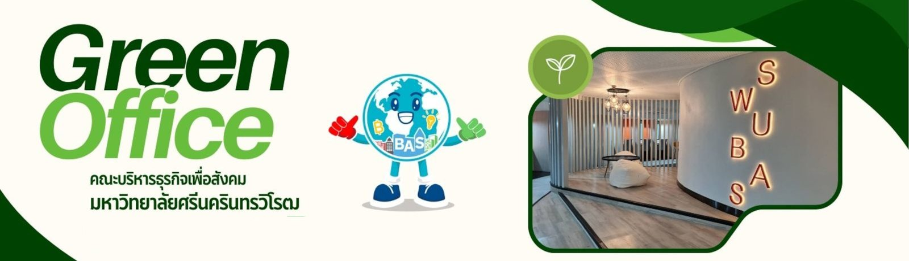
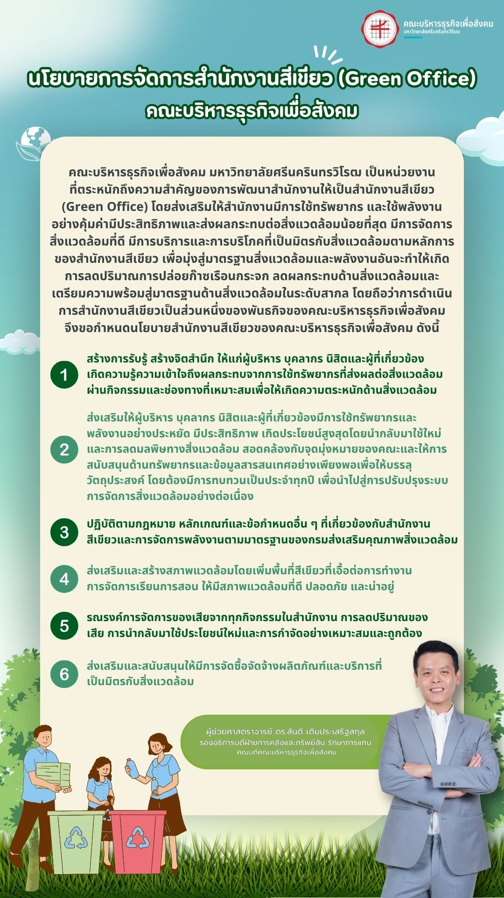
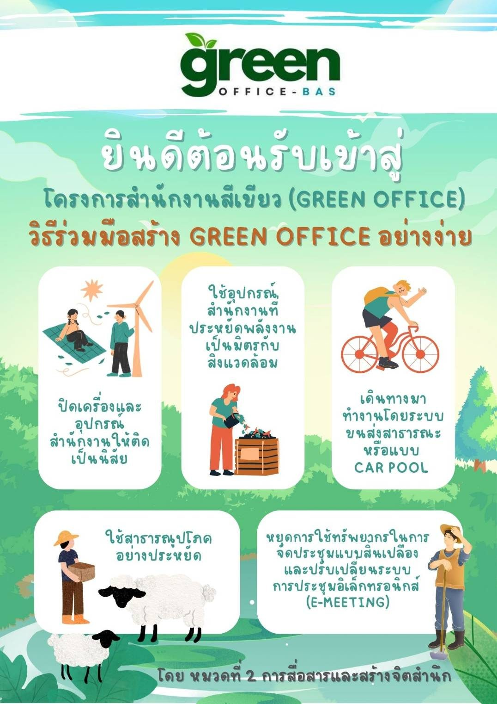
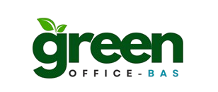

เกี่ยวกับคณะ
Green AwardGreen Award
รางวัลและการดำเนินงานด้านความยั่งยืนและสิ่งแวดล้อมของคณะบริหารธุรกิจเพื่อสังคม
สำนักงานสีเขียว
Green Office คืออะไรWhat is a Green Office
“สำนักงานและกิจกรรมต่าง ๆ ภายในสำนักงาน ที่ส่งผลกระทบต่อสิ่งแวดล้อมน้อยที่สุด” โดยใช้ทรัพยากรและพลังงานอย่างประหยัด พร้อมระบบการจัดการของเสียที่มีประสิทธิภาพ
แนวทางดำเนินการ
การปรับเปลี่ยนเป็นสำนักงานสีเขียวครอบคลุมตั้งแต่การออกแบบสถาปัตยกรรมและการก่อสร้าง การจัดหาอุปกรณ์ที่ประหยัดพลังงานและเป็นมิตรต่อสิ่งแวดล้อม ไปจนถึงพฤติกรรมของบุคลากรในการใช้ทรัพยากรและพลังงาน
สิ่งที่ทำได้ทันที
การเปลี่ยนแปลงเริ่มได้จากพฤติกรรมประจำวันของทุกคนในสำนักงาน
- ปิดไฟและอุปกรณ์สำนักงานทุกครั้งเมื่อเลิกใช้งาน
- สร้างนิสัยการใช้พลังงานอย่างรู้คุณค่าในชีวิตประจำวัน
- จัดซื้อวัสดุสำนักงานที่ประหยัดพลังงานและเป็นมิตรต่อสิ่งแวดล้อม
ความยั่งยืนและผลกระทบทางสังคม
เกณฑ์ประเมิน 6 หมวดSix Assessment Categories
คณะบริหารธุรกิจเพื่อสังคม มศว ดำเนินงานตามแนวทาง Green Office เพื่อลดผลกระทบต่อสิ่งแวดล้อมจากการดำเนินงานในสำนักงาน โดยประเมินผลใน 6 ด้านหลัก
หมวดที่ 1 · นโยบาย การวางแผนการดำเนินงาน และการปรับปรุงอย่างต่อเนื่อง
กำหนดนโยบายและแผนพัฒนาสำนักงานสีเขียวของคณะอย่างต่อเนื่อง
หมวดที่ 2 · การสื่อสารและสร้างจิตสำนึก
ส่งเสริมความรู้และการมีส่วนร่วมด้านสิ่งแวดล้อมแก่บุคลากรและนิสิต
หมวดที่ 3 · การใช้ทรัพยากรและพลังงาน
บริหารจัดการการใช้น้ำ ไฟฟ้า และทรัพยากรสำนักงานอย่างรู้คุณค่า
หมวดที่ 4 · การจัดการของเสีย
คัดแยกและลดปริมาณของเสียจากการดำเนินงานภายในสำนักงาน
หมวดที่ 5 · สภาพแวดล้อมและความปลอดภัย
ดูแลสภาพแวดล้อมการทำงานให้ปลอดภัยและถูกสุขลักษณะ
หมวดที่ 6 · การจัดซื้อและจัดจ้างที่เป็นมิตรกับสิ่งแวดล้อม
เลือกใช้สินค้าและบริการที่เป็นมิตรต่อสิ่งแวดล้อมในการจัดซื้อจัดจ้าง
เอกสารอ้างอิง
- นโยบายการจัดการสำนักงานสีเขียว
- คู่มือการดำเนินงานสำนักงานสีเขียว (Green Office)
การดำเนินงานทั้ง 6 หมวดมีการรายงานผลตามปีการศึกษา (2568 และ 2569) ดูเอกสารฉบับเต็มและผลการดำเนินงานรายหมวดได้ที่เว็บไซต์ Green Office ของคณะ
อ่านรายละเอียดโครงการ Green Office ฉบับเต็มได้ที่ bas2.swu.ac.th/greenoffice (เปิดเว็บไซต์ภายนอกในแท็บใหม่)
ภาพกิจกรรม
การดำเนินงานสำนักงานสีเขียวGreen Office in Action

กิจกรรมสำนักงานสีเขียวของคณะ

การสื่อสารและสร้างจิตสำนึกด้านสิ่งแวดล้อม

การใช้ทรัพยากรและพลังงานอย่างรู้คุณค่า

การจัดการของเสียภายในสำนักงาน

การจัดซื้อจัดจ้างที่เป็นมิตรกับสิ่งแวดล้อม